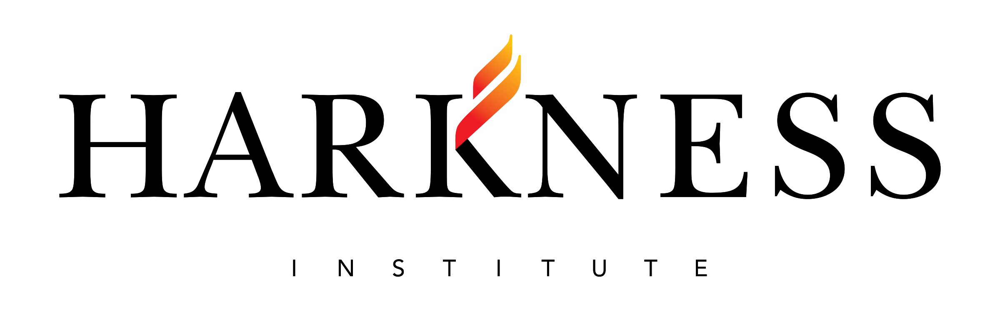
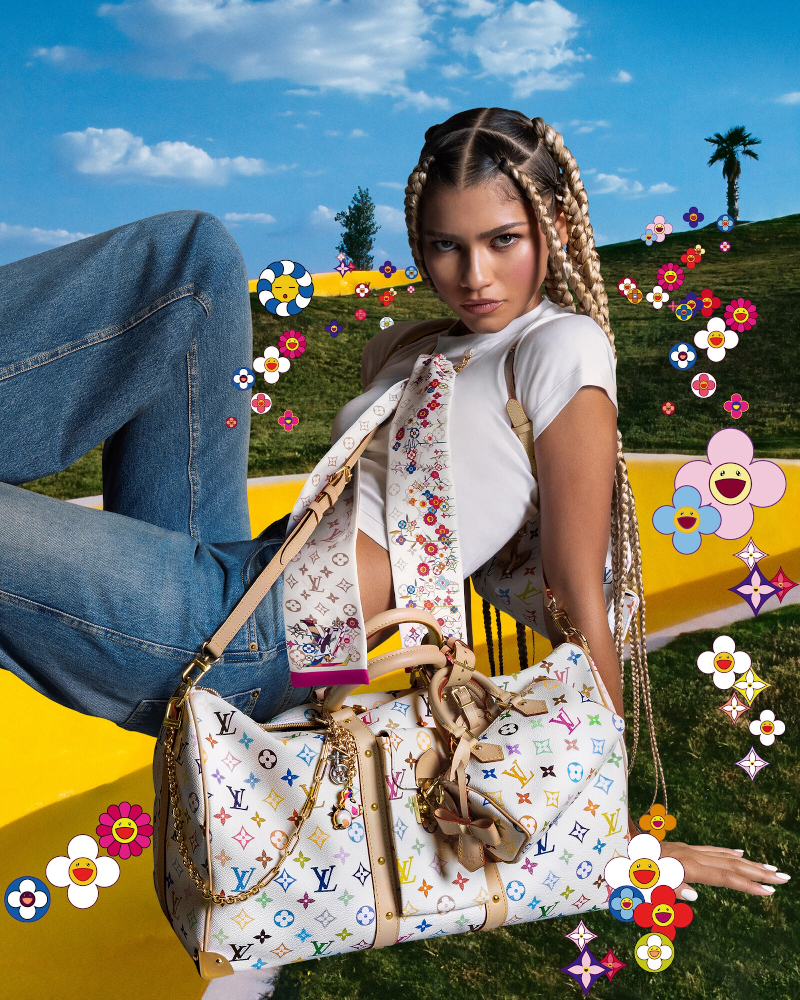
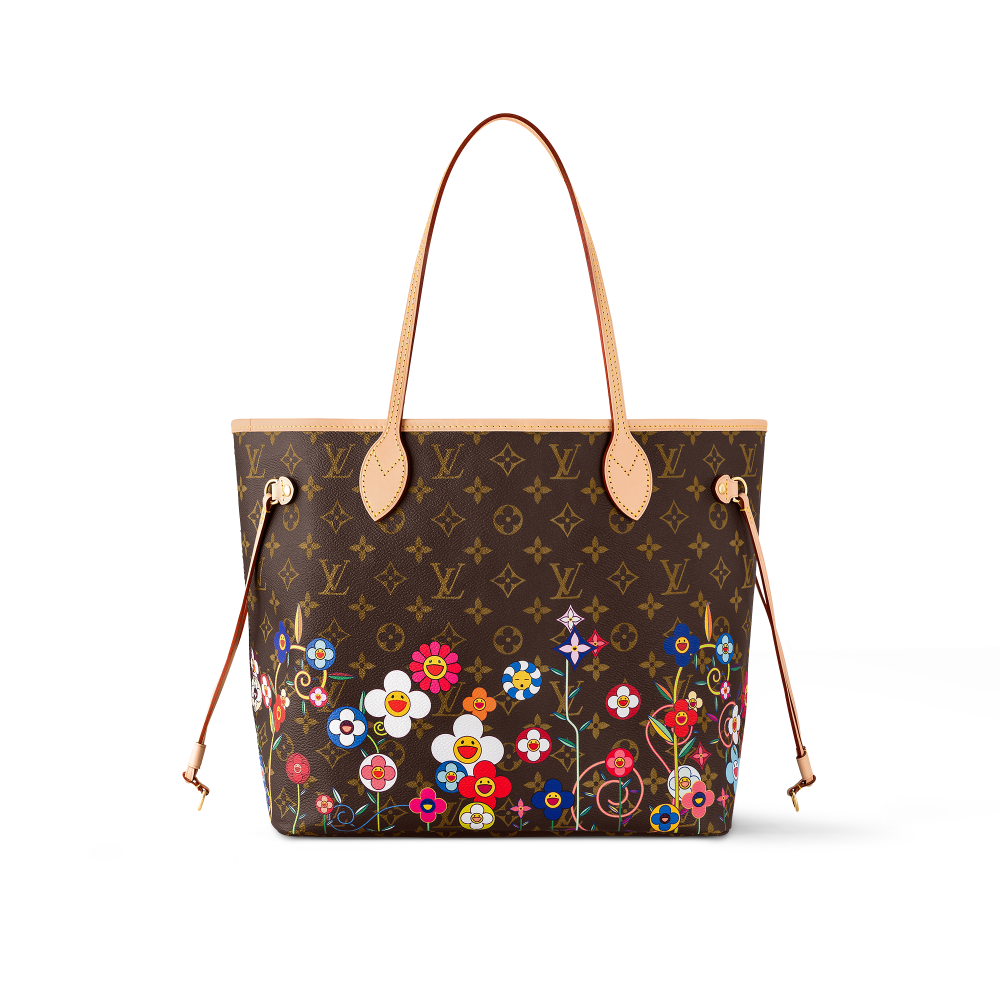
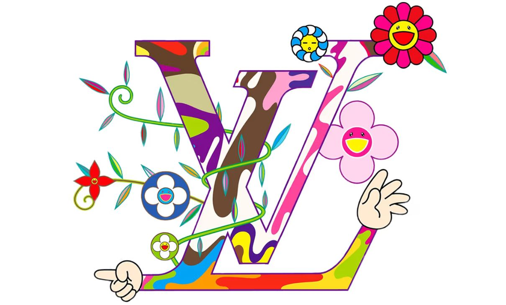

Sebastian Rodriguez Arce
6D
Practica 7
Profesora Azucena Cervantes
10/3/2025



Louis Vuitton y el artista japonés Takashi Murakami han renovado su colaboración para conmemorar el vigésimo aniversario de su alianza original. Esta reedición, denominada Louis Vuitton x Murakami, se lanzó el 1 de enero de 2025 y presenta más de 200 piezas que fusionan la artesanía de la Maison con la vibrante estética de Murakami.
Historia
ZENDAYA
Keepall Bandoulière 45